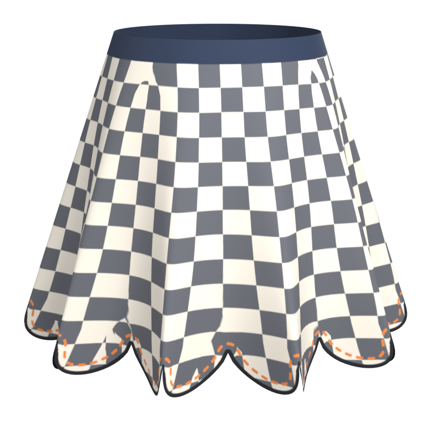
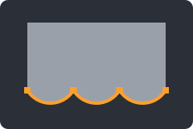
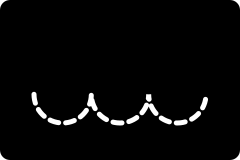

概览
这个插件可以在 Blender 里给模型的网格标注相应的边，沿着它们生成程序化、可调节的缝线、线稿和格纹，最后烘焙成遮罩，用在绘画软件里画贴图。
不同类型的图层

- 缝线有虚线和锯齿线两种。可以调整到模型边缘的距离，这个距离按模型上的实际尺寸保持不变，不受 UV 密度影响。
- 线稿顾名思义，就是给标注的边画上线稿。线的宽度同样按实际尺寸计算，不受 UV 密度影响。
- 格纹无缝的棋盘格。
流程

1. 标边 2. 调参数
2. 调参数
3. 烘焙 4. 绘制
4. 绘制
为什么在 3D 表面上计算
尺寸按模型上的真实毫米计算，UV 拉伸了也不受影响。
需要
Blender 4.2 或更新版本，网格需要有 UV。